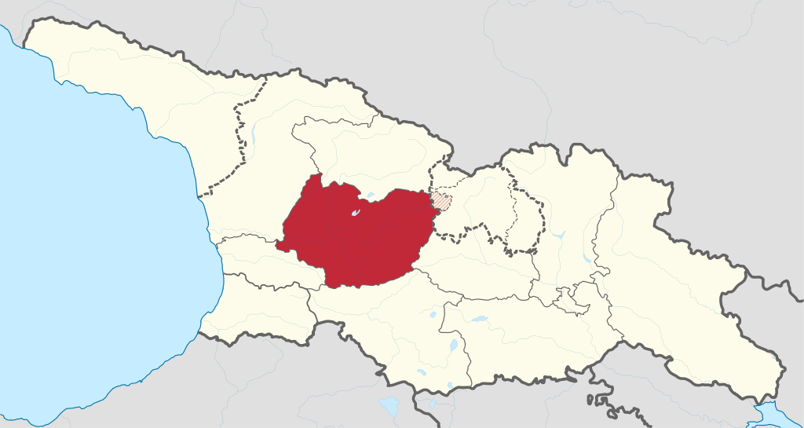

ახალი წელი იმერეთში

იმერეთში, ახალი წლის დადგომამდე, ოჯახის უფროსი, ხორაგით სავსე ხონჩით, სახლს სამჯერ წაღმა შემოუვლიდა. მას ხელში ლანგარი ეჭირა, რომელზეც ღორის თავი, მწვადი, მოხარშული დედალი, ლობიანი ღერღილის პური და ტკბილი კვერები ეწყო. ამის შემდეგ ოჯახის უფროსი სახლში, ოჯახის ყველაზე ხნიერ წევრთან ერთად, შევიდოდა. ხნიერი წევრი კერიაში ნაკვერჩხალს რამდენჯერმე დაჰკრავდა ჯოხს და ცეცხლიდან ნაპერწკლები იყრებოდა. ოჯახის უხუცესი თან ლოცულობდა: „როგორი უხვიც არის ეს ნაპერწკლები, ისე გვამრავლე და გაგვახარეო“.
საახალწლოდ რამდენიმე ჩიჩილაკი მზადდებოდა, ერთ-ერთი მარნისთვის იყო განკუთვნილი. ახალი წლის დილას შინაური მეკვლე წყაროდან წყალს მოიტანდა. ოჯახის წევრები პირს დაიბანდნენ და, ისევ მეკვლეს წინამძღოლობით, მარნისკენ წავიდოდნენ. მიჰქონდათ სანოვაგით სავსე გობი, ორშიმო და ჩიჩილაკი. მეკვლე ჩიჩილაკს საახალწლო ჭურის გვერდით დაასობდა. მარანს ახალ წელს მიულოცავდა, შემდეგ საახალწლო ჭურს მოხდიდა, ღვინოს გასინჯავდნენ და დოქებს აავსებდნენ.